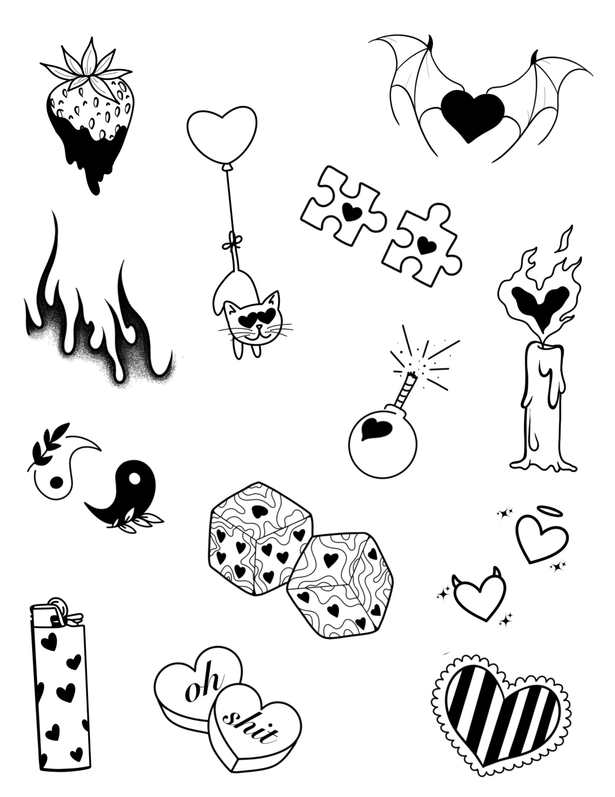
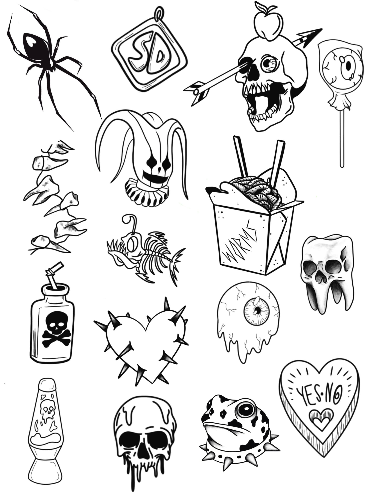

My Work


My Flash and Designs




Tattoo Artist
Fill out my booking form to request a tattoo.
I’ve been obsessed with art for as long as I can remember — from drawing in sketchbooks as a kid to studying fine arts formally, it’s always been the core of who I am. I earned my Associate’s in Fine Arts and went on to complete a Bachelor’s in Computer Science, combining creativity and tech through my love of web development and digital design.
Tattooing became my dream years ago, and I started chasing it in 2023, practicing on fake skin and learning everything I could. My apprenticeship was a unique mix of mentorship from multiple artists with over a decade of experience, plus self-guided learning through master classes and long nights in my sketchbook.
My goal as a tattoo artist is to help redefine how people see tattoos, self-expression, and the body as a canvas. I want to create art that feels personal, powerful, and affirming — all while building a community that’s safe, inclusive, and welcoming to everyone.
I live for bold lines, clean work, and making my clients feel confident. Outside of tattooing, I’m a gamer, makeup artist, and full-time cat mom (x4). Whether you’re here for your first tattoo or your tenth, I’ve got you — no judgment, just good vibes and great ink.
 zoeannchase.ink@gmail.com
zoeannchase.ink@gmail.com
 @zoeannchase.ink
@zoeannchase.ink